node安装教程
下载与安装
1.下载对应你系统的Node.js版本
官网地址: https://nodejs.org/en/2.下载完成后，双击“node-v6.9.2-x64.msi”，开始安装Node.js
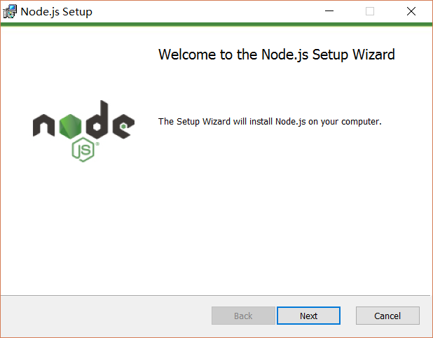3.点击【Next】按钮
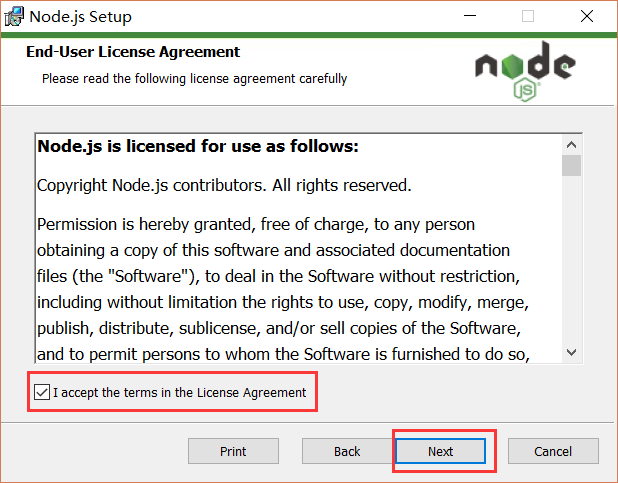4.勾选复选框，点击【Next】按钮
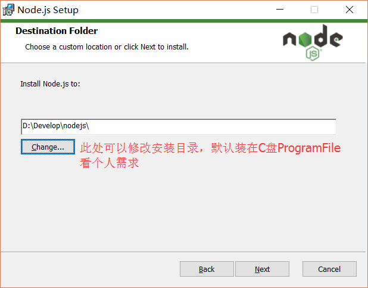5.修改好目录后，点击【Next】按钮
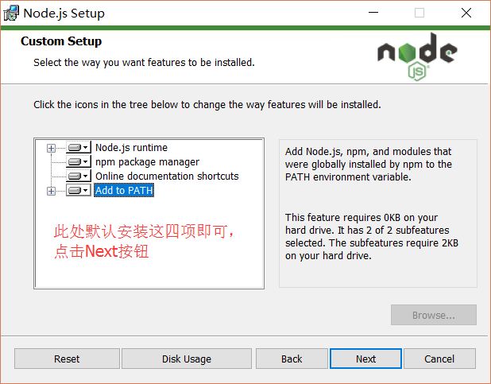
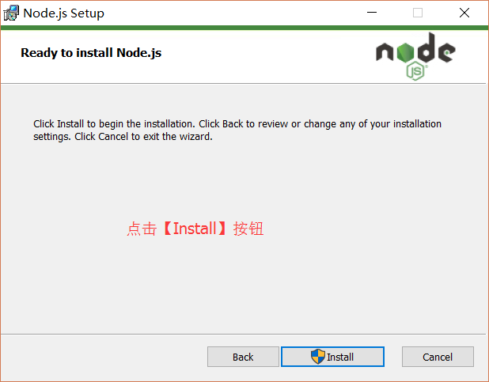6.安装完后点击【Finish】按钮完成安装
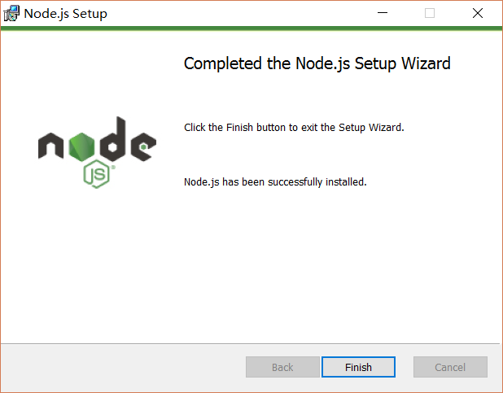7.至此Node.js已经安装完成，可以先进行下简单的测试安装是否成功了，后面还要进行环境配置,在键盘按下【win+R】键，输入cmd，然后回车，打开cmd窗口
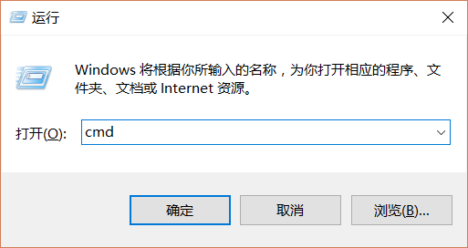8.输入命令，查看是否安装成功
1
2node -v
npm –v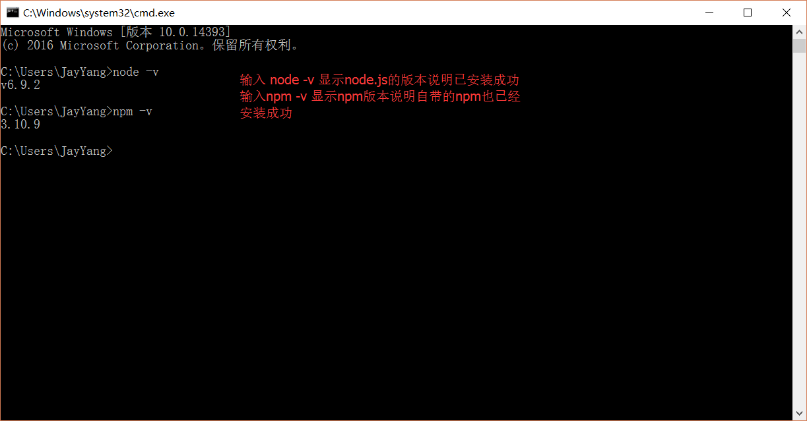
9.安装完后的目录如下图所示：
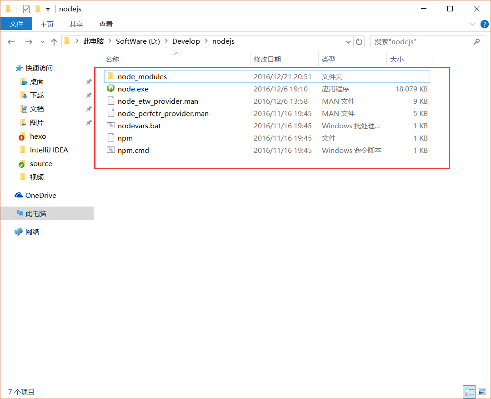
此处说明下：新版的Node.js已自带npm，安装Node.js时会一起安装，npm的作用就是对Node.js依赖的包进行管理，也可以理解为用来安装/卸载Node.js需要装的东西
环境配置
说明：这里的环境配置主要配置的是npm安装的全局模块所在的路径，以及缓存cache的路径，之所以要配置，是因为以后在执行类似：npm install express [-g] （后面的可选参数-g，g代表global全局安装的意思）的安装语句时，会将安装的模块安装到【C:\Users\用户名\AppData\Roaming\npm】路径中，占C盘空间。
1.例如：我希望将全模块所在路径和缓存路径放在我node.js安装的文件夹中，则在我安装的文件夹【D:\Program Files\nodejs】下创建两个文件夹【node_global】及【node_cache】如下图：
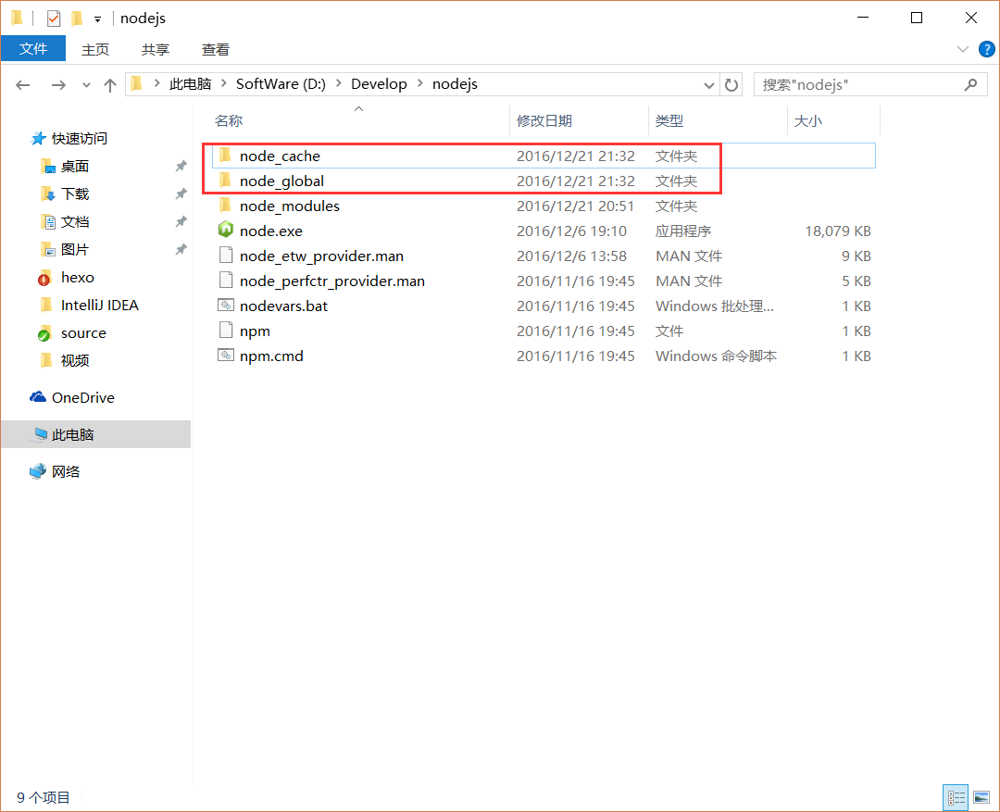2.创建完两个空文件夹之后，打开cmd命令窗口，输入
1
2npm config set prefix "D:\Program Files\nodejs\node_global"
npm config set cache "D:\Program Files\nodejs\node_cache"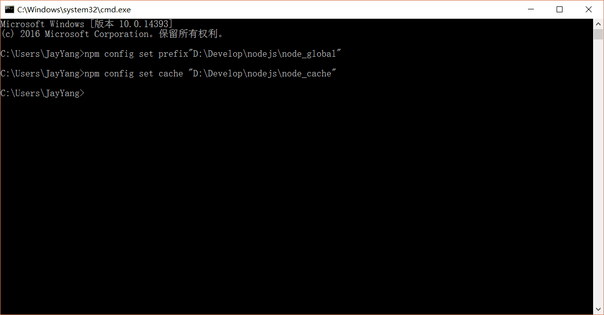
3.接下来设置环境变量，关闭cmd窗口，“我的电脑”-右键-“属性”-“高级系统设置”-“高级”-“环境变量”
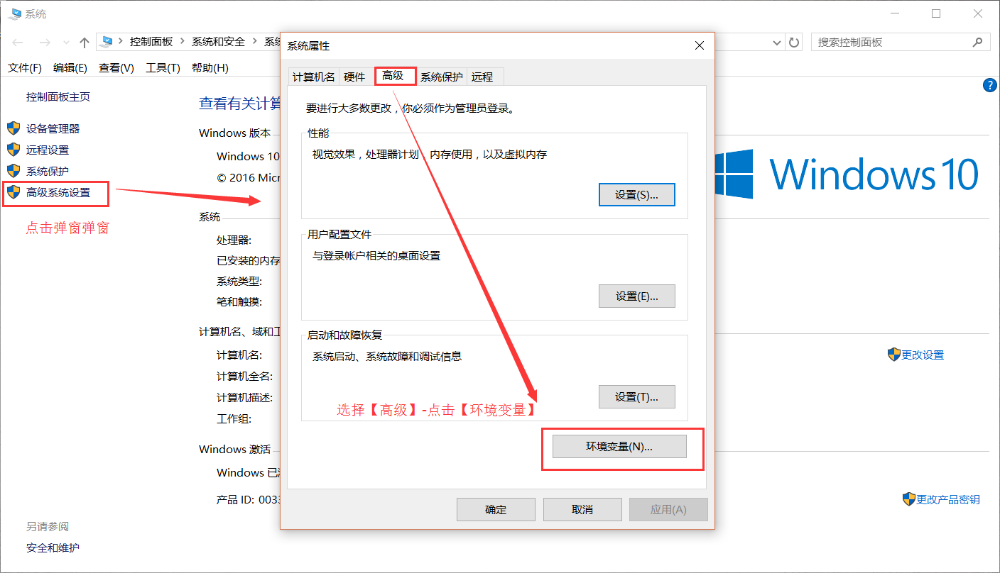4.在系统环境变量添加系统变量NODE_PATH，输入路径D:\Program Files\nodejs\node_global\node_modules，此后所安装的模块都会安装到该路径下
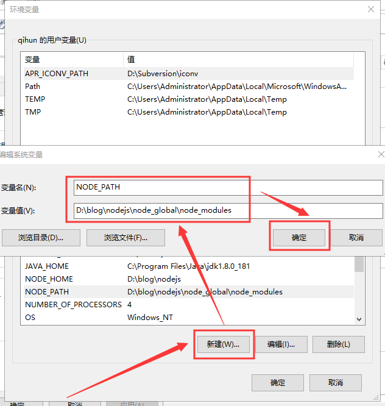
5.在命令行输入以下命令试着安装express（注：“-g”这个参数意思是装到global目录下，也就是上面说设置的“D:\Program Files\nodejs\node_global”里面。）
1
npm install express -g
6.安装完毕后可以看到.\node_global\node_modules\express 已经有内容
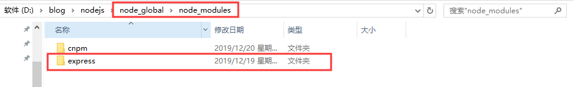7.在命令行输入node进入编辑模式，输入以下代码测试是否能正常加载模块：
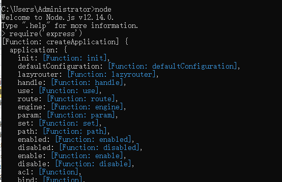
假设成功，可以看到有输出。假设出错，检查NODE_PATH的路径。
因为npm安装插件是从国外服务器下载，受网络影响大，可能出现异常，如果npm的服务器在中国就好了，所以我们乐于分享的淘宝团队干了这事。来自官网：“这是一个完整 npmjs.org 镜像，你可以用此代替官方版本(只读)，同步频率目前为 10分钟 一次以保证尽量与官方服务同步。”
推荐安装淘宝npm(cnpm)(可不安装)
cnpm与npm的区别
原文作者: 奇魂
原文链接: http://yoursite.com/安装教程/node安装/
版权声明: 转载请注明出处(必须保留作者署名及链接)